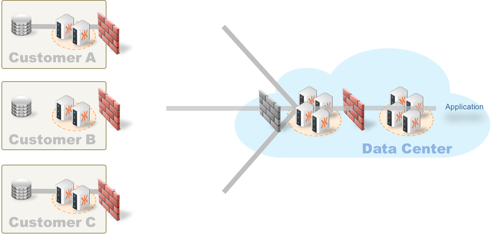
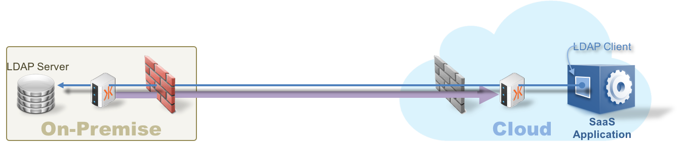

On-demand, Secure Hybrid Cloud Connectivity
KAAZING WebSocket Intercloud Connect (KWIC) offers on-demand, secure hybrid cloud connectivity. It allows companies to safely extend the reach of their enterprise services to their partners and customers without the complexity or expense of additional networking
products or technologies.
KWIC is based on the KAAZING Gateway, an industry-standard foundation that powers other KAAZING offerings. This Gateway leverages modern web standards such as WebSocket, HTTP and TLS (SSL) encryption. It allows customers to connect
enterprise services natively, securely and on-demand. KWIC extends infrastructure-to-infrastructure connectivity further by providing additional enterprise features, such as secure end-to-end connections, authentication interfaces
and DMZ-friendly installation. In addition, customers can also close 100% of all incoming ports to deter hacker attacks and still have native (full-duplex) connectivity.

KWIC was created to help customers reduce the
friction or
drag on connectivity when there is a need to broaden the reach of their services beyond the corporate firewall to the extended enterprise. It uses the standard web model of on-demand,
secure connections, so it is very cloud and data-center friendly.
KWIC contains no business logic, so it can easily be installed in the DMZ layer, or even daisy-chained across multiple DMZ layers. Configuration is very straightforward using a simple file-based tool.
KWIC allows SaaS providers to securely access services from the cloud to their customers' computing environment without additional hardware or hard-to-manage software. This feature dramatically shortens any on-boarding process for SaaS providers
and enhances the time-to-revenue for the SaaS provider. And since KWIC constrains the connection to a specific service and also can shut down all incoming ports, the level of security is significantly higher than legacy cross-firewall networking
tools.
KWIC is an effective hybrid cloud tool that offers real-time agility to both service providers and their customers by leveraging the standards and flexibility of the web.
